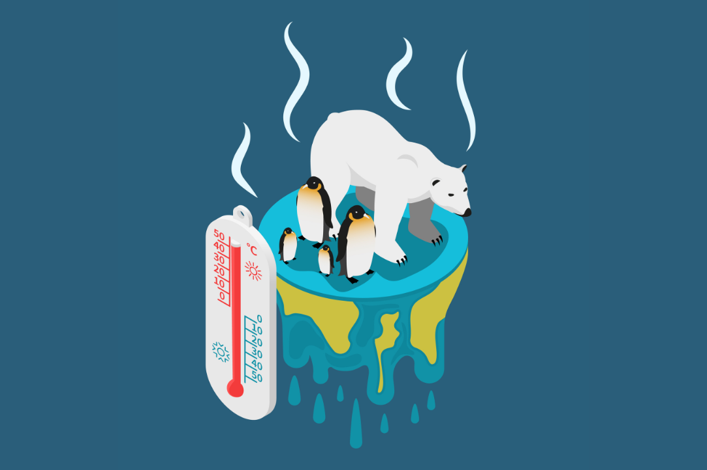
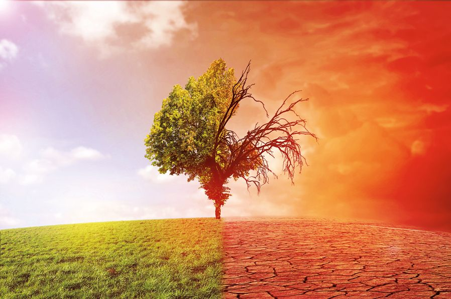

ГЛОБАЛЬНОЕ ПОТЕПЛЕНИЕ
КРАТКОЕ ИНФО, ПРИЧИНЫ ПРОБЛЕМЫ, СПОСОБЫ РЕШЕНИЕ
КРАТКАЯ ИНФОРМАЦИЯ!
Глобальное потепление — это долгосрочное увеличение средней температуры на Земле, вызванное человеческой деятельностью, особенно сжиганием ископаемого топлива (уголь, нефть, газ), что приводит к накоплению парниковых газов (например, CO2) в атмосфере. Это изменение климата вызывает таяние ледников, повышение уровня мирового океана, изменение погодных условий, увеличение частоты экстремальных погодных явлений, таких как ураганы, засухи и наводнения. В результате страдает экосистема, сельское хозяйство, водоснабжение и здоровье людей. Борьба с глобальным потеплением требует снижения выбросов парниковых газов и перехода к более устойчивым источникам энергии.
ПРИЧИНЫ ПРОБЛЕМЫ
{% if button_zhik%}Сжигание ископаемого топлива
Ископаемые виды топлива, такие как уголь, нефть и природный газ, широко используются для производства электроэнергии, отопления и транспорта. Когда эти материалы сжигаются, они выделяют углекислый газ (CO2) и другие парниковые газы. CO2 является основным парниковым газом, который задерживает тепло в атмосфере и усиливает парниковый эффект. В последние десятилетия из-за роста промышленности, транспорта и потребления энергии выбросы CO2 значительно увеличились, что стало одним из главных факторов глобального потепления.
Промышленное производство
Промышленный сектор, включающий такие отрасли, как металлургия, химическая промышленность и производство цемента, является крупным источником выбросов парниковых газов. Заводы и фабрики используют большое количество энергии, обычно получаемой из ископаемого топлива, что приводит к выбросу CO2. Кроме того, некоторые промышленные процессы, такие как производство цемента, сами по себе выделяют CO2. Химическая промышленность также ответственна за выбросы других парниковых газов, таких как фторсодержащие газы, которые обладают очень высоким потенциалом глобального потепления.
Сельское хозяйство
Сельское хозяйство является важным источником парниковых газов, особенно метана (CH4) и закиси азота (N2O). Метан выделяется в процессе пищеварения крупного рогатого скота (коровы, овцы) и при разложении органических веществ в условиях недостатка кислорода, например, на рисовых полях. Закись азота выделяется при использовании азотных удобрений, которые широко применяются для повышения урожайности. Эти газы обладают гораздо более высоким потенциалом глобального потепления по сравнению с CO2, несмотря на то, что их концентрация в атмосфере значительно ниже.
Вылесение (дефорестация)
Леса играют ключевую роль в поглощении углекислого газа из атмосферы. Однако массовая вырубка лесов, особенно тропических, ведет к утрате этого природного механизма поглощения CO2. Деревья, которые вырубаются или сжигаются, высвобождают углекислый газ, накопленный в их биомассе, что увеличивает общую концентрацию CO2 в атмосфере. Дефорестация также приводит к утрате биоразнообразия и нарушению водного цикла, что усугубляет последствия изменения климата.
Землепользование, урбанизация
Изменение землепользования, связанное с расширением городов, строительством инфраструктуры и интенсивным сельским хозяйством, приводит к деградации природных экосистем, таких как леса, болота и пастбища, которые ранее служили поглотителями CO2. Урбанизация увеличивает площадь поверхностей, которые нагреваются на солнце и выделяют тепло в атмосферу (например, асфальт, бетон), что усиливает эффект "теплового острова". Это приводит к дополнительному нагреву окружающей среды и увеличению энергозатрат на охлаждение зданий.
Землепользование, урбанизация
Транспортный сектор является одним из крупнейших источников выбросов парниковых газов. Автомобили, грузовики, самолеты, корабли и поезда сжигают огромное количество бензина, дизельного топлива и авиационного керосина, что приводит к выделению CO2 и других вредных веществ. Несмотря на развитие технологий и повышение топливной эффективности, общий объем выбросов от транспорта продолжает расти из-за увеличения числа транспортных средств и объемов перевозок. Вклад авиации в глобальное потепление особенно значителен из-за выбросов на высоких высотах, где их воздействие на климат усиливается.
СПОСОБЫ РЕШЕНИЯ
{% if button_gas%}Сократить выбросы парниковых газов
1. Перейти на возобновляемую энергию: Использовать солнечную, ветровую и другие чистые источники энергии вместо угля и нефти.
2. Повысить энергоэффективность: Использовать меньше энергии, делая дома и предприятия более эффективными, например, устанавливая энергосберегающие лампочки и утепляя здания.
3. Электрифицировать транспорт: Перейти на электромобили и общественный транспорт с низкими выбросами.
Использовать новые технологии
1. Улавливать и хранить углерод Разработать технологии, которые захватывают CO2 на заводах и электростанциях и хранят его под землей.
2. Развивать водородную энергетику: Использовать водород как чистый вид топлива.
Защищать и восстанавливать природу